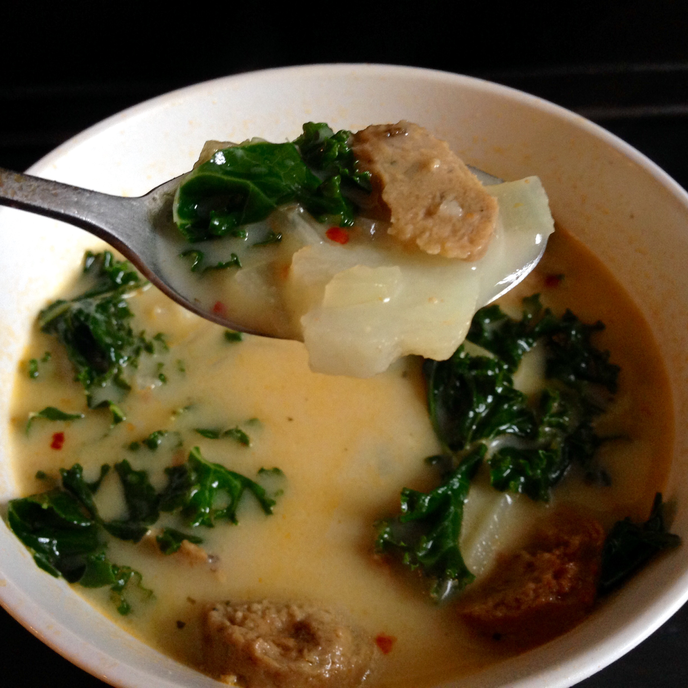

Zuppa Toscana Recipe

Authentic Zuppa Toscana is the perfect cold weather meal!
What You Will Need
- 6 quart sauce pan or Dutch Oven
- 1 pound spicy italian sausage
- 5 garlic cloves minced
- 1 medium yellow onion diced
- 1 1/2 pounds Yukon Gold potatoes (or similar)
- 1 teaspoon Italian seasoning
- 6 cups chicken broth
- 4 cups chopped kale
- 1 cup heavy whipping cream
- Freshly grated parmesan (optional)
Steps
- Add a small amount of oil to a pan on medium heat and sauté onions until softened.
- Add garlic to pan and sautee for another 30 seconds.
- Add the sausage to the pan, breaking it up and sauté until cooked through or about 5 minutes.
- Add the potatoes, Italian seasoning and chicken broth, and bring it to a boil. then, reduce the heat to
medium-low and let it simmer uncovered for about 10 minutes, until the potatoes are fork tender.
- Once the potatoes are done, add the chopped kale, bacon, and heavy cream. Give everything a stir and let simmer
for another 5 minutes.
- Ladle the soup into bowls and garnish with black pepper and fresh grated parmesan and serve!
Home